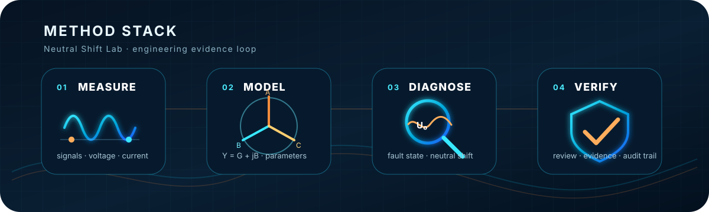

Signals, insulation parameters, and diagnostic inputs.
Researcher / engineer / energy audit
Iskander Kurabayev
Electrical engineering researcher, energy-efficiency specialist, applied measurement engineer, PhD, and accredited energy auditor in Kazakhstan.
A public profile for work that connects energy facilities, energy-audit practice, academic research, measurement systems, and an AI-assisted engineering laboratory.
PhD
Energy auditor
Electrical power systems
Applied measurement
AI Engineering Lab
Research -> Measurement -> Energy Audit -> AI Lab
Direct routes
Start from the QR card or the full profile
QR
Business-card landing
Fast mobile profile with portrait, trust chips, selected routes, ORCID, and Scopus.
ENFull English profile
Biography, education, trajectory, research focus, selected works, and public status notes.
RUРусский профиль
Содержательная русская версия с теми же границами приватности и фактов.
Neutral Shift Lab
A control-station visual system for the same public profile

Admittance, conductance, susceptance, and vector reasoning.
Neutral shift, earth-fault context, and voltage diagnostics.
Energy audit, engineering review, and AI-assisted traceability.